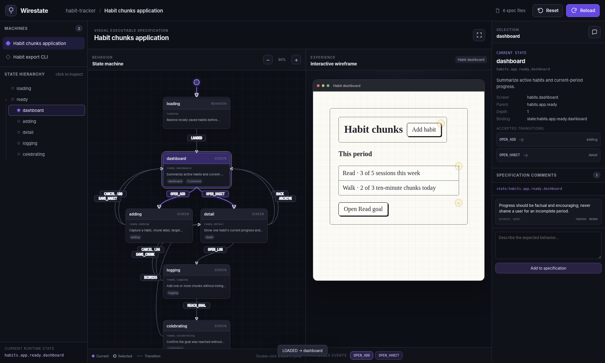

Hierarchical machines
Compose large products from nested state machines instead of forcing thousands of microstates into one flat graph.
Model an application as composable state machines and low-fidelity screens. Click through the prototype, generate against a deterministic contract, and verify the real application with test traces.

Wirestate keeps desired behavior, the interactive prototype, source bindings, and observed test behavior connected through repository-native files.
Compose large products from nested state machines instead of forcing thousands of microstates into one flat graph.
Transition metadata makes buttons, toggles, and inputs operate the same machine interpreter used by the CLI.
Compare states and edges observed by Playwright or any test runner with the behavior declared in the spec.
Stable data attributes, decorators, and comments reveal missing and unknown links in both directions.
Attach acceptance criteria and rationale directly to states and components as readable YAML diffs.
Give coding agents deterministic states, screens, interactions, bindings, and human constraints—not another ambiguous ticket.
The browser is a synchronized surface over simple YAML. Every meaningful change can be reviewed, generated, replayed, and checked in CI.
states: dashboard: screen: dashboard on: OPEN_ADD: target: adding interaction: kind: click component: habit.addButton adding: screen: adding # Intent is explicit and reviewable.
Wirestate is built for specification-first, AI-driven development. The checked-in specification is authoritative; graphs, previews, generated tests, and scaffolds are derived. Directly editing derived output creates hidden, non-reproducible state that agents and reviewers cannot reliably interpret and that regeneration may overwrite.
Yes. Humans and agents can change machines, screens, comments, and constraints through the filesystem, CLI, or specification-focused UI operations. The restriction applies to derived artifacts, not to authoring intent.
No. It adds a behavioral contract and coverage model above test implementation. Tests still exercise the application; Wirestate checks whether their evidence agrees with the intended state graph and whether expected behavior remains unvisited.
The core focuses on behavior, reachability, bindings, and modeled coverage. Screenshot, accessibility-tree, and semantic DOM adapters can complement it without turning the DSL into a styling language.